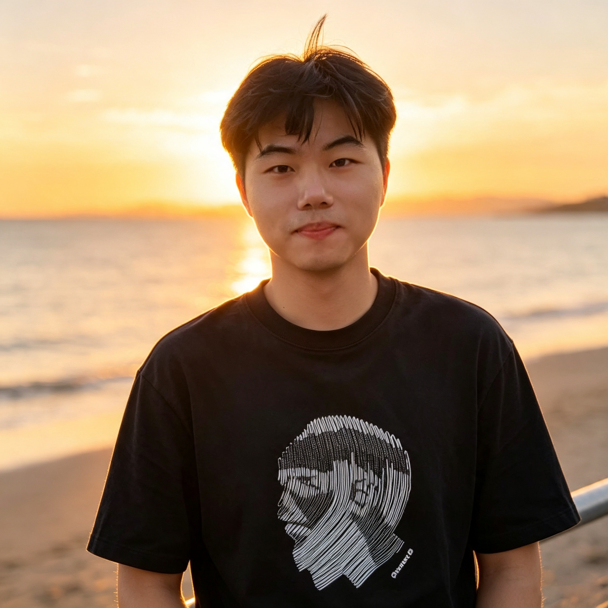
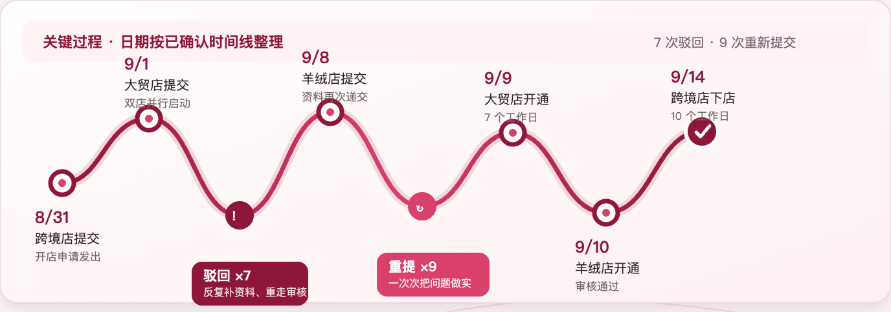
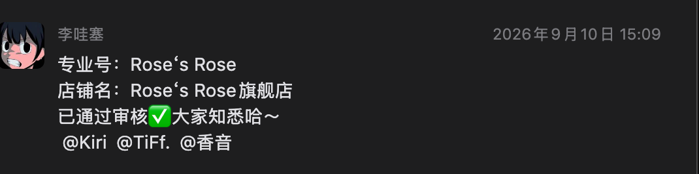

风雨并肩扛
遇到任务和困难，不只守着自己的分工；主动沟通、及时补位，把伙伴的事当作团队的事，一起把结果接住。李涛先把难事接过来，团队才有了继续往前的空间。

运营中心--李涛｜人物专访
“这个事情，我必须得先干下去。”
2026.10
从价值观解码，到开店与直播交付，再回到每个人都能参与的团队日常。
本期主价值观
以爱为底色，以成就为交付
爱不是讨好，是尊重与善意；不透支用户信任。
用我们的专业成就用户之美，让用户变得更美、更稳、更自由。
遇到任务和困难，不只守着自己的分工；主动沟通、及时补位，把伙伴的事当作团队的事，一起把结果接住。李涛先把难事接过来，团队才有了继续往前的空间。
看见彼此的努力，及时给予鼓励和认可；愿意分享经验、让出资源、成就伙伴，让一次个人行动变成团队共同的能力。
爱与成就，让困难变成经历，让经历成为经验，最后大家一起变得更强。
“如果这个事情没做完的话，对于我来说是焦虑的，吃饭都吃不下，睡觉都睡不着。”
这是李涛回忆抖音店铺筹备时最直接的一句话。一次开店，背后牵动的是平台审核、品牌授权、商品链接、库存条码、跨境仓储和直播节奏。面对多次驳回、多个店铺和多个直播节点并行推进，他和伙伴们没有停在“条件太复杂”，而是把问题拆开、逐个解决，并在过程中彼此托底、共同成长。一个人先把路走通，再让更多伙伴少走弯路，这正是【爱与成就】的真实发生。
抖音开店从 9 月下旬开始筹备。平台审核严格，资料一旦出现问题，前面已经通过的部分也可能需要重新审核。临近直播时，店铺还没有完全跑通，链接、商品和活动又接踵而来。李涛当时承担了店铺、平台和内部协同的主要工作，和团队内小伙伴一起，把一项项看似琐碎的事情重新排出顺序：哪些资料要补，哪些信息要确认，哪些节点必须提前预留时间。
他说：“这个事情，我必须得先干下去。”先接住责任，再拆分任务；面对未知先行动、再沉淀，让团队更有继续向前的确定感。

这次双十一 T 播相关商品链接约 400 条，其中约 100 条需要团队自建，约 300 条涉及品牌代发。每一条链接都要确认主图、编码、条码、库存、价格和发货时间；一个产品可能有多个条码，图片和实际发货商品也必须一一对应。看起来只是“建链接”，实际牵动的是平台规则、商品信息和用户收到货时的完整体验。
李涛和团队把这些细节逐项核对，把过去需要十几天的平台活动报名，逐步压缩到三四天左右。速度的背后，不是降低标准，而是把踩过的坑变成方法，把零散经验变成流程，把一次次确认变成下一次可以复用的底气。
李涛提到，团队在平台上同时承担商家、买手、代发等多重角色，也会主动研究品牌尚未使用过的平台功能，再把操作方法讲清楚、带着伙伴一起用。曾经需要从零摸索的功能，如今可以通过经验传递，帮助更多品牌和同事更快上手。
从“我来处理”到“我们都会做”，一次项目的价值才真正被留下。

“这次双十一给我最大的感受是，很多事情不是一个人能完成的。大家一起努力、一起扛、一起把问题解决掉，最后还是能够把事情往前推。可能结果不一定马上达到最初的预期，但至少我们知道自己还可以继续往前走。”
“我觉得抖音开店的learning，最大的一个就是真实性。不管是盖章、签字，还是品牌授权资料，都必须真实、清晰、完整。尤其是抖音的审核，一个章上面的英文如果有一点点瑕疵，它都可能不认，就要重新去盖，整个周期也会被拉长。我后来总结的一点就是，前期拿资料的时候一定要更严谨。不要想着先提交上去，后面再慢慢补。因为有些品牌一个月可能只能盖一两次章，如果前面没有按照平台要求准备好，后面每一次驳回，都会把整个周期往后推。”
“现在再做类似的事情，效率会比之前高很多。因为我们已经把前面总结出来的经验留下来了，平台的规则熟悉了，内部的配合也更顺了。以前一个事情可能要花十几天，现在有些环节三四天就可以完成。经验留下来之后，下一次就不用再从零开始。”
从“我来处理”到“我们都会做”，一次项目的价值才真正被留下。经验被交给伙伴，方法被留给团队，下一次出发就多了一份底气。
运营中心 店铺运营部
红书运营--李涛
一次补位，一次鼓励，
一句有力量的话
一次经验传递，都会让团队走得更稳、更远。
你看见的文化一刻，也许只是一个伙伴主动接住了一件难事，或是把自己走过的路讲给后来的人听。
投稿方式：扫码填写案例，或发送至 HR 邮箱（aroseisarosehr@aroseisarose.cn）分享。
参与福利：投稿即有精美礼品，优秀案例将收录进《玫瑰文化一刻》，让更多伙伴看到。
| 类型 | 规则说明 | 奖励产品档位 | 奖励产品 |
|---|---|---|---|
| 参与投稿 | 完整填写表单，填写内容符合价值观导向，即可获得小礼物一份。 | 第一档 | 文化周边 |
| 投稿录用 | 完成投稿并录用成为稿件素材，案例达到价值观牵引作用，符合玫瑰是玫瑰的使命与愿景，可获得精美礼物一份。 | 第二档 | 玫瑰精品 OEM |
| 标杆个人 | 参与稿件撰写、配合访谈，可获得精美 OEM 一份。 | 第三档 | 玫瑰精品 OEM |
欢迎分享你看见的真实文化一刻。